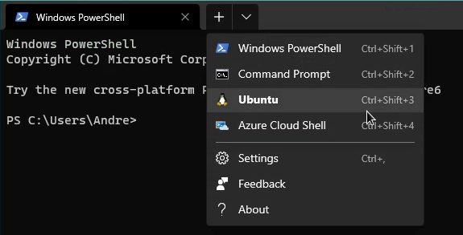

Windows Subsystem for Linux¶
Installation and usage of pyfurc on Windows systems has only been tested using the Windows Subsystem for Linux (WSL). This will be the prerequisite and is covered in the following section.
Installing Windows Subsystem for Linux¶
For installing WSL follow the 6 manual installation steps from this guide on microsoft.com.
Note
In step 6 make sure to install Ubuntu.
Note
If you run into errors you you may need to enable virtualization in your bios/UEFI. How to do this is manufacturer dependent.
For Lenovo Thinkpads there is this guide for example.
Installing Windows Terminal¶
After WSL is installed successfully, install Windows Terminal from the Microsoft Store (free).
You now have access to a Ubuntu system running inside your Windows 10 system.
Accessing the Ubuntu Subsystem¶
To access Ubuntu start Windows Terminal and click on the + in the window frame to open a new tab. Select Ubuntu:
You are now prompted with a Ubuntu command line. We will call this Ubuntu Terminal from now on.
Note
Ubuntu has its own file system separate from your Windows file system.
To access the Ubuntu file system from Windows type \\wsl$ into the
address bar of a Windows Explorer window. You can then navigate to
your home directory (Ubuntu > home > username).